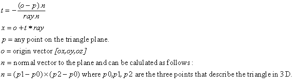

High Speed Hardware Raytracer
Daniel Beer (dbb28), Kashif Javed (kj49)
High Level Design
Ray tracing is a very useful 3D rendering technique. In real life, we see through rays of light that are emitted from a source, colored by reflecting off of objects, and eventually bounced into our eye. The amount and color of light that hits our retina at a certain point thereby allows us to figure out the objects that exist in front of us.
Ray tracing mimics this process, but proceeds in reverse. Rays are shot from our camera, colored when they hit objects, and then bounced toward the light to shade them. Because this method is so similar to the real life process, it can create very realistic images and numerous interesting effects.
Ray Tracing Algorithm:
The ray tracing algorithm is divided into three main components:
- Shooting a ray from a pixel on the image plane into the scene.
- Finding the intersection of ray with a given triangle.
- Shading the pixel.
Example pseudocode for this:
- For every pixel
- For every triangle in the scene
- Shoot a ray through the pixel
- Find ray intersection with the triangle
- Determine if this triangle is nearer then the previous triangle
- If so, color and update the pixel
- For every triangle in the scene
Ray Casting:
We start by placing a camera in our scene, a pinhole from which we want to see. A plane is placed in front of the camera, which represents the image we are filling in. The image is divided into rows and columns of pixels and then a ray is cast starting at the origin of the camera and passing through the center of a pixel.
Figure 1: Camera Setup
A ray is a vector that passes through a given pixel and whose tail is at the origin. The vector that connects the origin and the center of the image plane is called the forward vector. The magnitude of the forward vector is the distance between the image plane and the origin. The up vector is defined as the vector that is orthogonal to the forward vector in the positive z-direction in a left handed co-ordinate system. A ray through PixelX and PixelY is given by:

Figure 2: Ray Casting
Ray Intersection:
Our ray tracer is designed to trace triangles in three dimensions. The reason for doing so was because it leads to more general meshes i.e. complex scenery can be generated consisting only of triangles. The triangle ray intersection is a two step process.
Step 1 is to intersect the ray with the plane of the triangle. This can be done using the following formula:

Step 2 is to determine whether the intersection point of the ray and the plane is inside the triangle or not. A triangle is made of three lines and as you move along each line, you can divide the plane into two spaces one to the left that is inside the triangle and other to the right. If you test for all three lines for a given point and it happens to be on the left side of all three lines, then the point is inside the triangle. Mathematically, this can be represented by the following equations:
If the above three equations result in a non-negative number, then we can safely assume that the point x is inside the triangle.
Figure 3: Ray Triangle Intersection
Shading:
Once a point x is found to be inside our view plane, we have to assign it a color. There are several lighting models that can be used. We use the Lambertian model in which the intensity of the color is independent of the view point. The shaded color is found as follows:
The light l vector and the normal n have to be normalized before they are multiplied with the color to get the right intensity for the pixel.
Drawing the image:
After the ray from each pixel is intersected with all the triangles in the scene, the closest intersection is found, and the pixel is filled in with the color calculated at that intersection. By repeating this procedure for each pixel in the image, the entire scene is rendered.